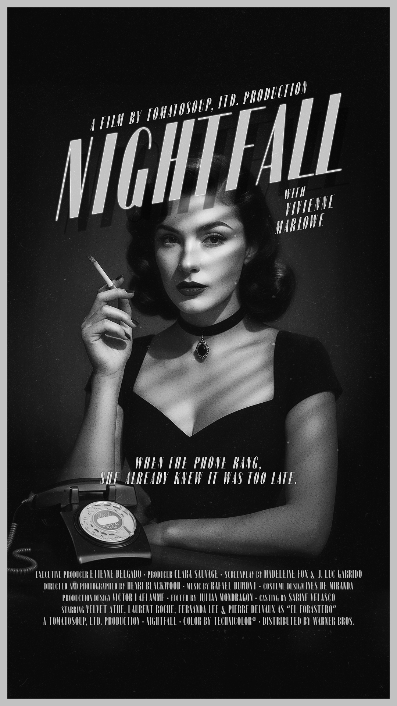
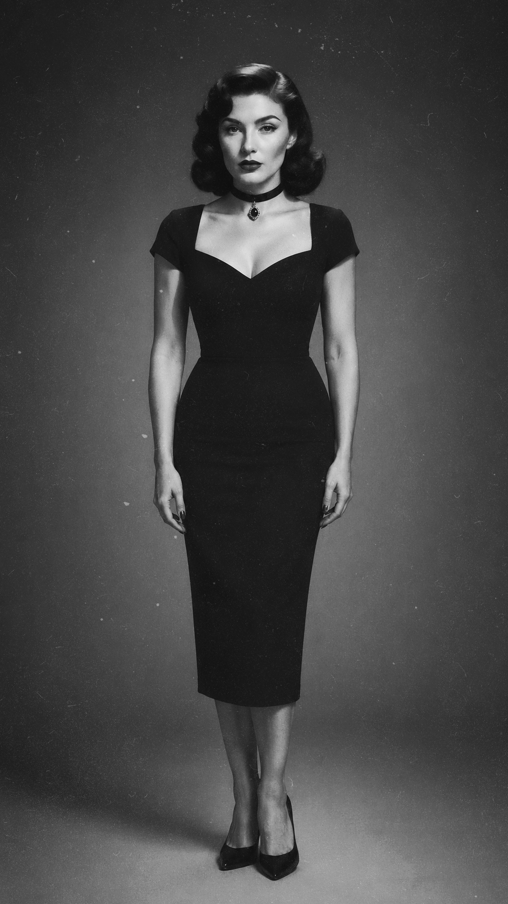
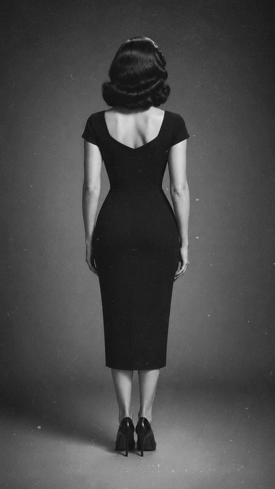
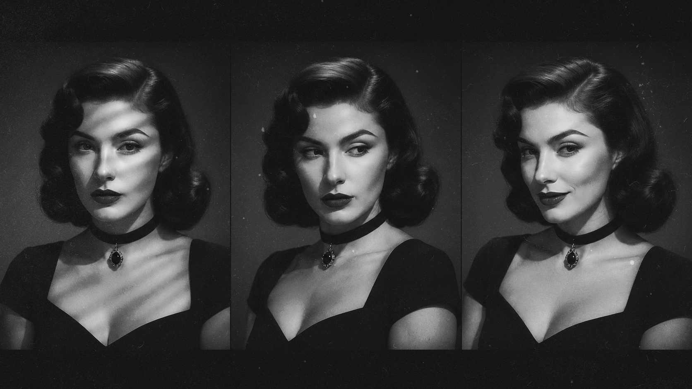
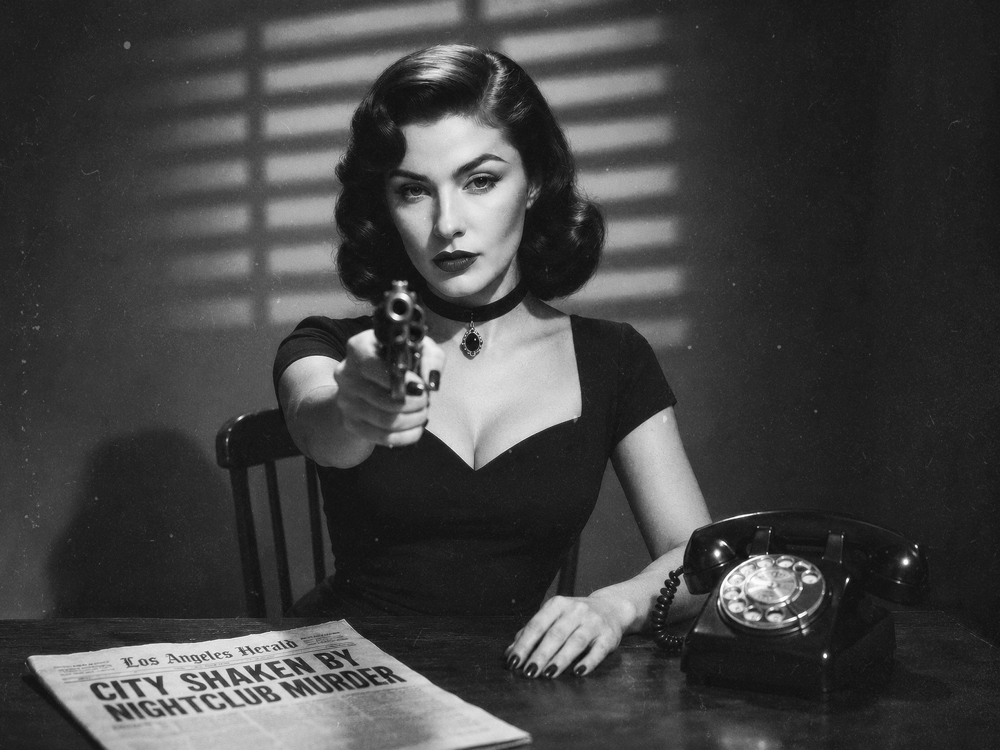
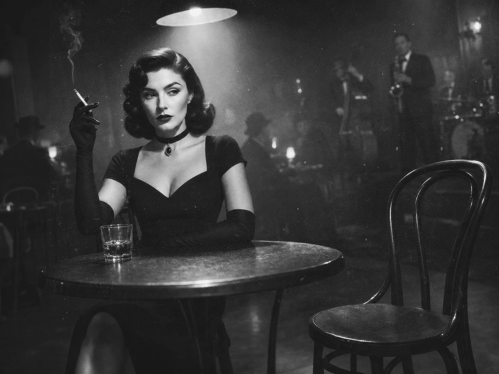
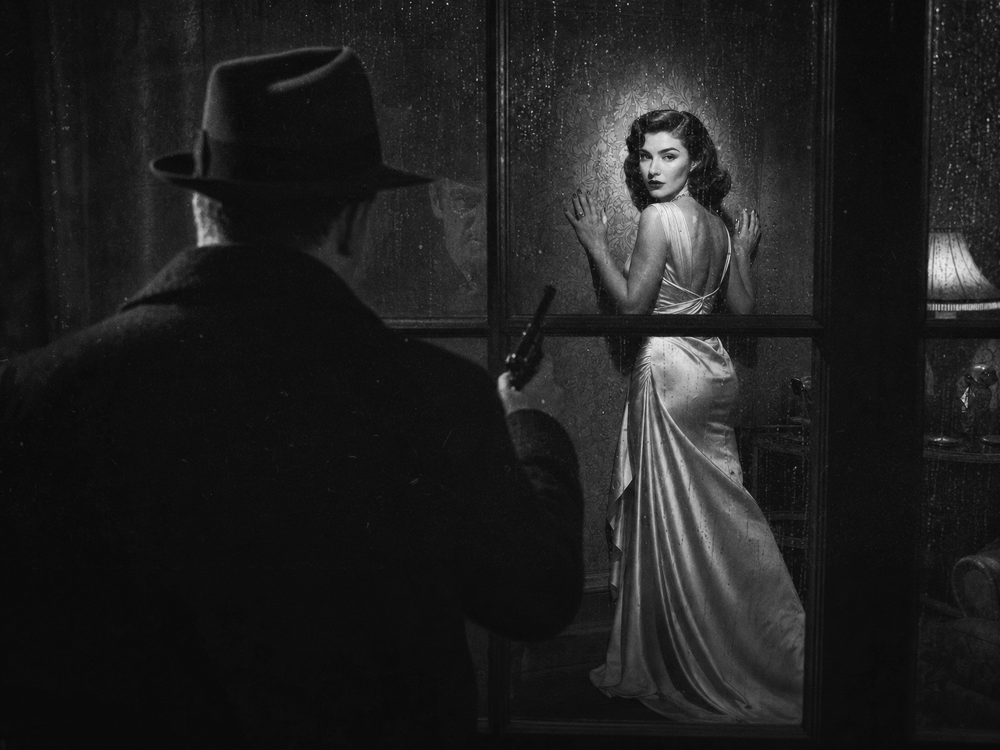
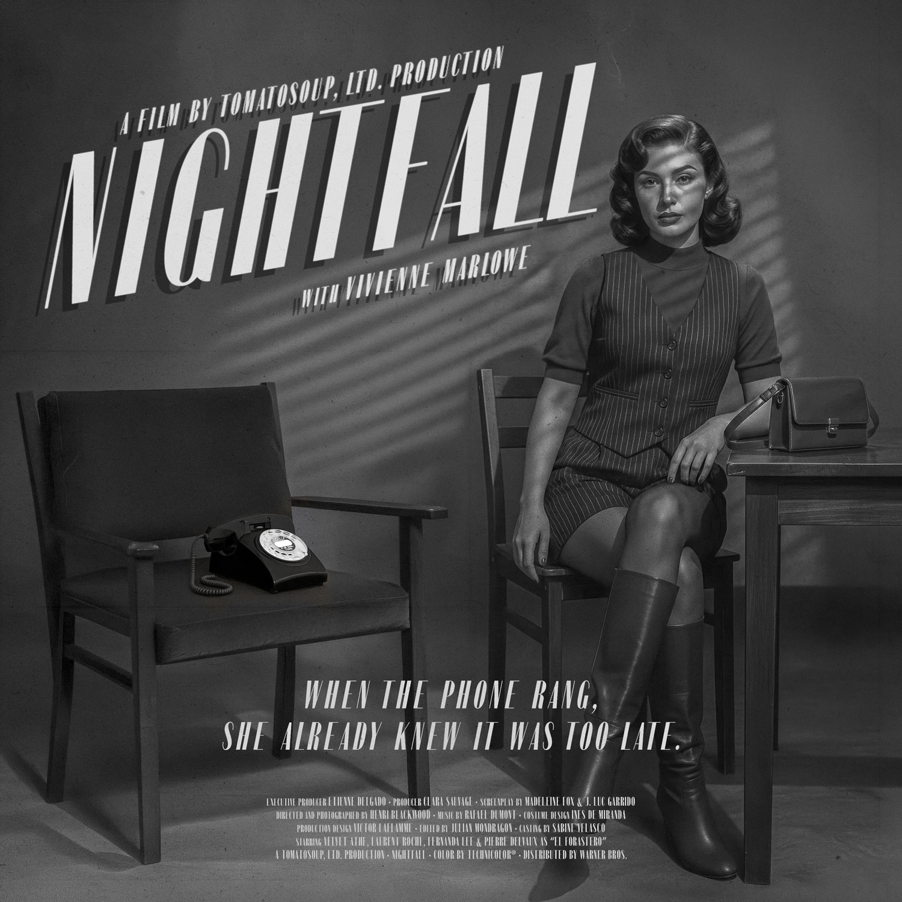

Nightfall
When the phone rang, she already knew it was too late.
A fictional 1950s noir film developed through poster design, cinematic stills and ChatGPT Image.
The story follows a secretary working for a powerful politician who discovers that dialing 9 from her office telephone allows her to listen to private conversations. What begins as an accidental intrusion slowly turns into a web of threats, betrayals, revenge and desire.
Nightfall is conceived as a visual teaser for a film that does not exist — an exercise in atmosphere, suspense and classic noir language, built through fragments rather than a complete narrative.
2024







